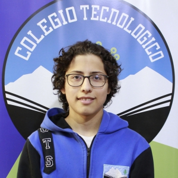

Maciel Acuña

Datos Personales
- Correo: acuna.maciel@cts.edu.ar
- Dirección: Villegas 1135
- Teléfono: 2944638158
- Fecha de nacimiento: 15/08/2004
- Edad: 18 años
- Estado civil: Soltero/a
- Número de CUIL: 20-45832801-4
Estudios Cursados
- Escuela 273, San Carlos de Bariloche
- Colegio Tecnologico del Sur, San Carlos de Bariloche con título Técnico Electrónico
Capacitación Complementaria
- Certificado de Kaggle
- Virtual; 2022
Experiencia Laboral
-
Tecnologico del Sur
- Scrapper
- Incio: 03/03/2023 - En curso
Descargar en formato de Word